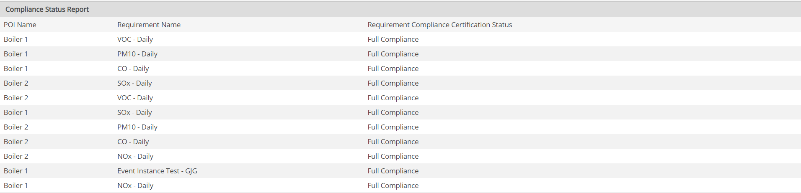
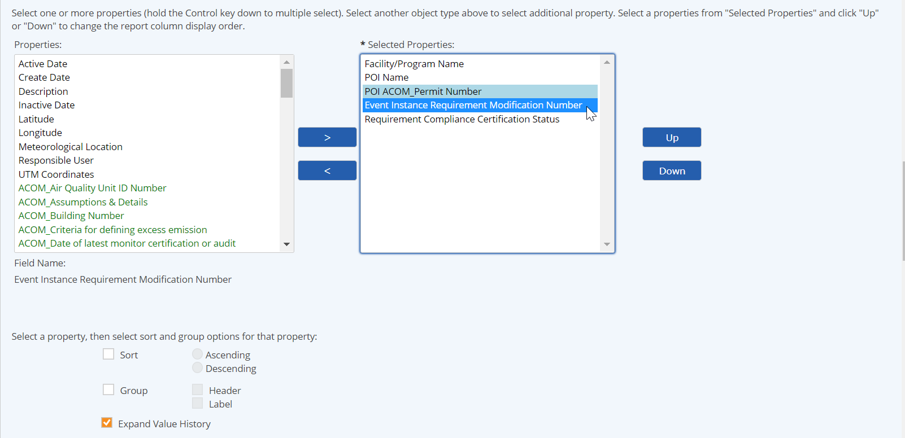
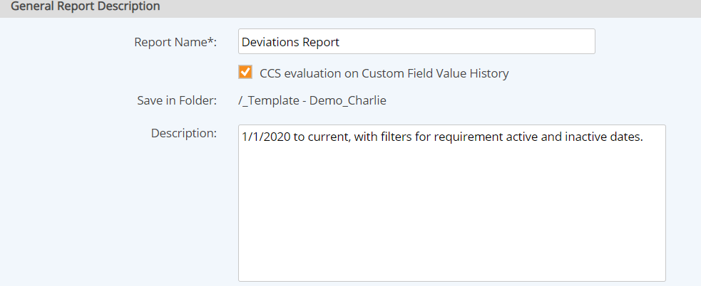

Compliance Status Reports (or Compliance Certification Reports) are used to report on the compliance status of tracked requirements over a period of time.
A Compliance Status Report looks at the Comply status for all data points for a Requirement and the Accept as Deviation field for all related events within the specified period. It uses these values to determine the compliance status.
The Compliance Status Report shows one row for each Requirement. The columns are the properties of the Requirements, and the properties of related objects you choose to include.

Event instance information fields can be included in the Compliance Status Summary report, in order to allow the report to show what happened to cause a requirement to be out of compliance and what action was taken.
To include event instance fields, on the report definition select the Event Template, then choose the properties (event fields) to include on the report.
Additionally, some agencies require that the compliance status be calculated for each unique permit modification. To meet this requirement, an option is available to calculate the Compliance Certification Status per the defined interval in a custom field with a tracked value history, rather than by report begin and end dates.
To use the option to calculate compliance status per custom field defined interval:
Include at least one custom field with a tracked value on the report, and check "Expand Value History" for that field.

Check the "Compliance Certification Status calculated per history interval" checkbox in the General Report Description section.

If checked, AND at least one custom field property is selected with "Expand Value History" checked, report will calculate compliance status using Begin and End Dates from the Custom Field Value History Interval.
If unchecked, OR no custom field property is selected with "Expand Value History" option checked, the compliance status is calculated with report Begin and End Dates.